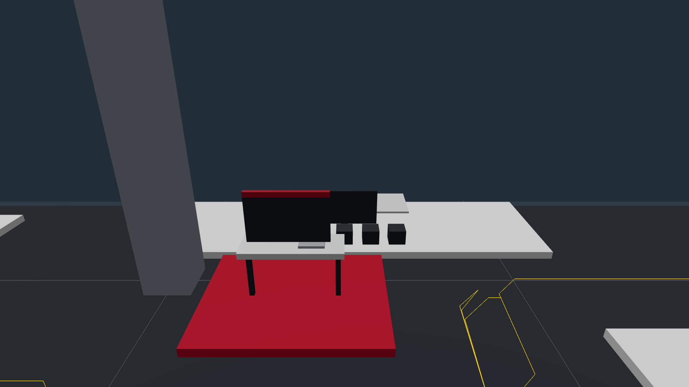

Открытая переговорная и компактные витрины.
Цифровой показ процессов, которые нецелесообразно размещать физически.
Бумажная карта визита и образцы не требуют нового сложного ПО.
Стоимость пока не оценена; соответствие бюджету не заявляется.